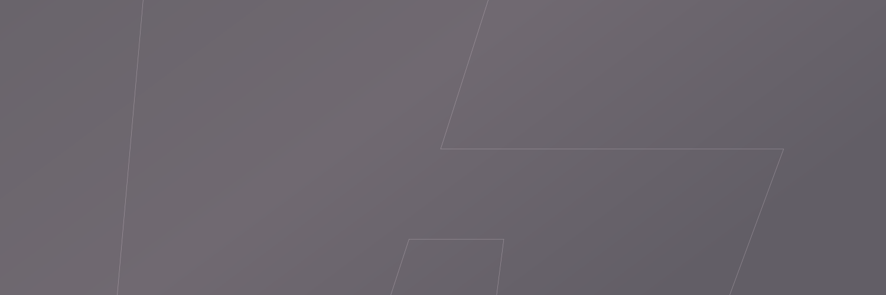
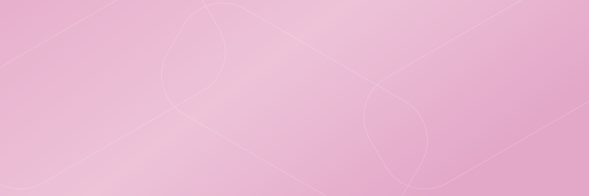
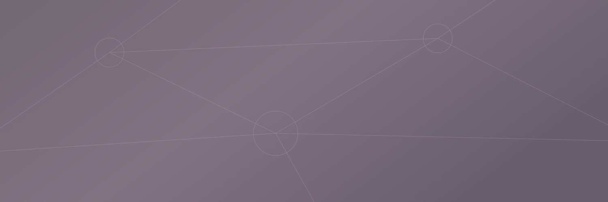

01 / Silent monogramA single enormous HAUS contour, centered and cropped into a quiet graphite field.SVG ↓PNG ↓
03 / Open contoursWide architectural outlines stretch beyond the edges of warm pearl.SVG ↓PNG ↓
04 / Common linksOversized rounded rectangular links overlap like a barely visible chain.SVG ↓PNG ↓
05 / Invisible networkSparse nodes and long connecting lines quietly imply a shared network.SVG ↓PNG ↓